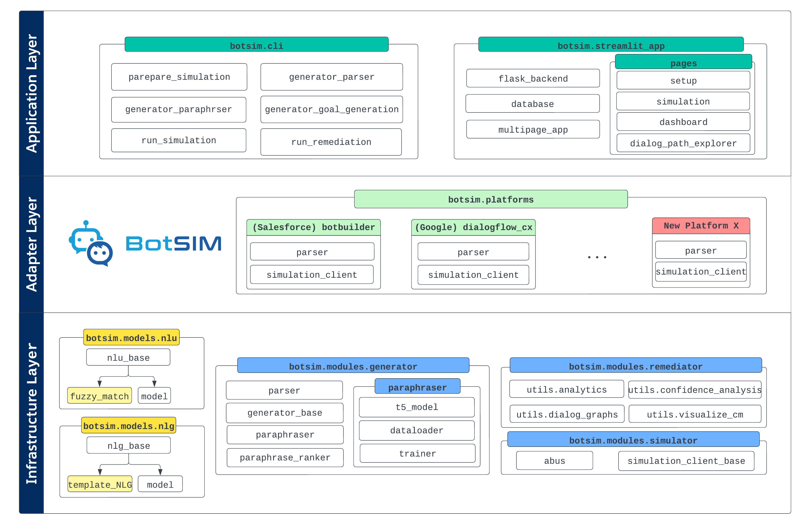

What is BotSIM?
BotSIM is a modular, open-source Bot SIMulation toolkit to serve as a one-stop solution for large-scale data-efficient end-to-end evaluation, diagnosis and remediation of commercial task-oriented dialog (TOD) systems.
As a simulation framework, bot developers can extend BotSIM to support their own bot platforms. As a toolkit, BotSIM can be readily applied by bot admins or practitioners with little or even no technical backgrounds to perform testing and remediation of their bots.
Key features of BotSIM include:
Multi-stage bot evaluation: BotSIM can be used for both pre-deployment testing and potentially post-deployment performance monitoring.
Data-efficient dialogue generation: Equipped with a deep network based paraphrasing model, BotSIM can generate an extensive set of test intent queries from the limited number of input intent utterances, which can be used to evaluate the bot intent model at scale.
End-to-end bot evaluation via dialogue simulation: Through automatic chatbot simulation, BotSIM can identify existing issues of the bot and evaluate both the natural language understanding (NLU) performance (for instance, intent or NER error rates) and the end-to-end dialogue performance such as goal completion rates.
Bot health report dashboard: The bot health report dashboard presents a multi-granularity top-down view of bot performance consisting of historical performance, current bot test performance and dialogue-specific performance. Together with the analytical tools, they help bot practitioners quickly identify the most urgent issues and properly plan their resources for troubleshooting.
Easy extension to new bot platform: BotSIM was built with a modular task-agnostic design, with multiple platform support in mind, so it can be easily extended to support new bot platforms. (*BotSIM currently supports Salesforce Einstein BotBuilder and Google DialogFlow CX.)
BotSIM can significantly accelerate commercial bot development and evaluation, reduce cost and time-to-market by: 1) reducing efforts for test dialog creation and human-bot conversation; 2) enabling a better understanding of both Natural Language Understanding (NLU) and end-to-end performance via extensive dialog simulation; 3) improving bot troubleshooting process with actionable suggestions from simulation results analysis.
BotSIM Architecture

BotSIM’s “generation-simulation-remediation” pipeline is shown above.
Generator takes bot designs and intent utterances as input and produces the required configuration files and dialog goals for dialog simulation.
Simulator performs agenda-based dialog simulation through bot APIs.
Remediator enerates health reports, performs analyses, and provides actionable insights to troubleshoot and improve dialog systems.
BotSIM System Design
{kind=link}
The key design principles of BotSIM include modularity, extensibility and usability so that the framework can be easily adopted by both bot end users and developers. The framework comprises of three layers, namely the infrastructure layer, the adaptor layer and the toolkit layer.
Infrastructure layer
The infrastructure layer is designed to offer fundamental model support for the framework.
It comprises two major categories: the natural language understanding (NLU), natural language generation (NLG) models and the key modules including the generator, the simulator and the remediator
LAVIS has six key modules.
- botsim.models contains BotSIM’s NLU and NLG models. From a dialogue system perspective, BotSIM can be viewed as counterpart to a chatbot: it needs to “understand” chatbot messages (NLU) and “respond” in natural languages (NLG). Currently, fuzzy matching-based NLU and template-based NLG models are provided for efficiency reasons. More advanced NLU and NLG models can also be incorporated by the developers.
- botsim.modules consists of the three key modules to power BotSIM’s “generation-simulation-remediation” pipeline.
botsim.modules.generatorsupports two major functionalities: 1)parserto parse bot metadata to infer dialog acts and dialog-act maps (BotSIM’s NLU); 2)paraphraserto generate paraphrases of the input intent utterances to be used as intent queries in the simulation goals to probe bots’ intent model.
botsim.modules.simulatorimplements the dialog-act level agenda-based user simulation inabus. It also defines a simulation API client interfacesimulation_client_base
botsim.modules.remediatoranalyzes the simulation dialogs and produces the performance metrics and conversational analytics to support the dashboard visualisation.
Adaptor Layer: accommodating new bot platforms
Built on top of the infrastructure layer, the adaptor layer is designed for easy extension of BotSIM to new bot platforms. The two most important platform-specific components of the layer include
parseracts as an “adaptor” to unify bot definitions (e.g. conversation flows, intents/tasks) from different platforms to a common representation of dialog act maps. The dialog act maps are used as BotSIM NLU to map bot messages to dialog acts. Note the implementations of the parser are highly platform-dependent and require bot developers to have access to bot APIs and bot design documentations. We have provided the implementations of BotBuilder and DialogFlow CX parser as references.simulation_clientis the other platform-dependent component for BotSIM to exchange conversations with bots via API calls. Similar to the parser, the implementation of the client depends on the design of the bot APIs and requires developers to choose appropriate APIs to implement the simulator client.
Application Layer
The application layer is designed to significantly flatten the learning curves of BotSIM for both bot developers/practitioners and end users.
botsim.clicontains a set of command line tools for practitioners to learn more about the major BotSIM components. The “generation-simulation-evaluation” pipeline has been split into multiple stages to expose the required inputs and expected outputs. They serve as basic building blocks for bot practitioners to build their customized pipelines.botsim.streamlit_appis a multi-page easy-to-use Web app. The motivation is to offer BotSIM not just as a framework for developers but also as an easy-to-use app to end users such as bot admins without diving into technical details. The app can be deployed as a docker container or to the Heroku platform. We use Streamlit for supporting the front-end pages. Flask is used to support the backend APIs for Streamlit to invoke BotSIM functionalities. The app is also equipped with a SQL database to store simulation status and historical performance across multiple platforms.
Installation
(Optional) Creating conda environment
conda create -n botsim python=3.9
conda activate botsim
Cloning and building dependencies
git clone https://github.com/salesforce/botsim.git
cd BotSIM
pip install .
Running Streamlit App
Running Streamlit App locally
export PYTHONPATH=./:$PYTHONPATH
export DATABASE_URL="db/botsim_sqlite_demo.db"
streamlit run botsim/streamlit_app/app.py
Optionally, the app can also be deployed as a docker container
device=cpu # change device to gpu to build a GPU docker image
docker build --build-arg device=$device -t botsim-streamlit .
docker build -t botsim-streamlit .
docker run -p 8501:8501 botsim-streamlit
Alternatively, users can also use the command line tools to gain more flexibility. More details of how to run the command line tools are given in the tutorial section below.